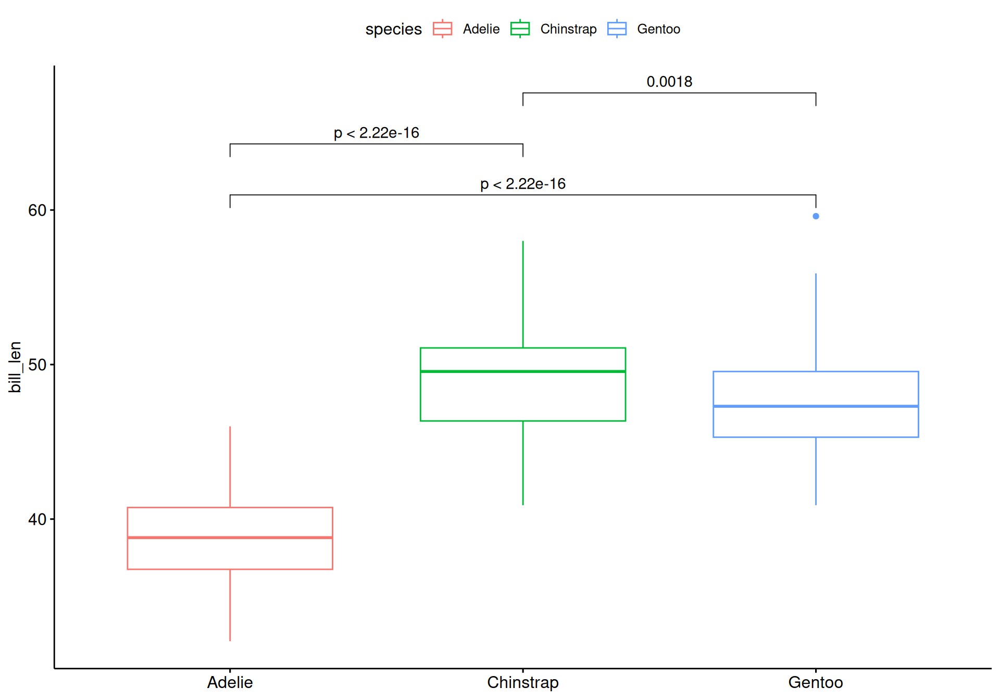
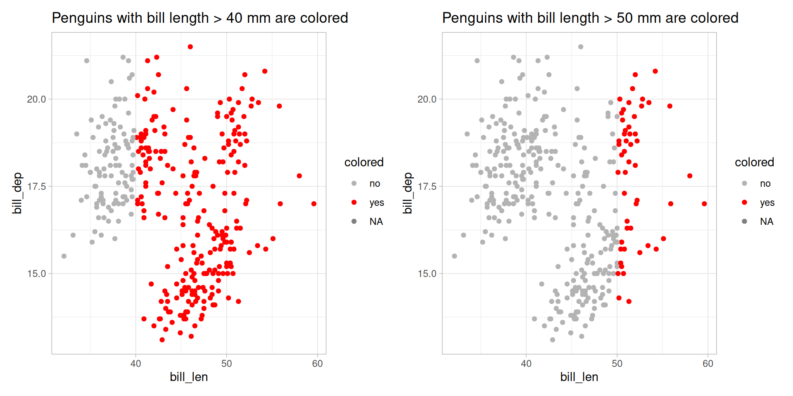

# A tibble: 6 × 5
Sepal.Length Sepal.Width Petal.Length Petal.Width Species
<dbl> <dbl> <dbl> <dbl> <fct>
1 5.1 3.5 1.4 0.2 setosa
2 4.9 3 1.4 0.2 setosa
3 4.7 3.2 1.3 0.2 setosa
4 4.6 3.1 1.5 0.2 setosa
5 5 3.6 1.4 0.2 setosa
6 5.4 3.9 1.7 0.4 setosa Graphs Level Up: {ggplot2} (Part 2) & Custom Functions
IOC-R Week 8
Recap Data Wrangling & Basic ggplot2
Reshape Data with {tidyr}
- Reshape data to longer or wider format as needed.

Manipulate Data with {dplyr}
- Select columns related to petal and show the last 3 rows.
- Create a new column for the ratio of sepal length and width.
- How many rows with sepal ratio > 2.8?
Basic ggplot2

(Figure adpated from QCBS R Workshop Series.)
ggplot2 - Part 2
Set Default Theme
Built-in themes: https://ggplot2.tidyverse.org/reference/ggtheme.html
- Use
theme_set()to apply a selected theme to all plots. - Use
theme_update()to modify elements of the current theme.
library(ggplot2)
# apply theme_light() to every plot
theme_set(theme_light())
# modify single elements of the current theme (aka theme_light())
theme_update(
axis.title = element_text(
size = rel(2), # twice the default axis title size
face = "italic" # make the axis title italic
),
axis.text = element_text(size = rel(2)),
strip.text = element_text(size = rel(2)),
plot.title = element_text(size = rel(2)),
legend.text = element_text(size = rel(2)),
legend.title = element_text(size = rel(2))
)Customizing Scales
scale_color|fill|shape_manual(): Assign specific colors, fill colors or shapes.
See colors in R and Color Palette Finder.
Customizing Scales
scale_color|fill|shape_manual(): Assign specific colors, fill colors or shapes.
See possible shapes.

Customizing Scales
scale_*_continuous(limits = ...)orxlim()orylim(): Change axis limits or continuous scales.
use scale_*_discrete() if the axis mapped to a discrete variable.
Add Lines to Figures
- Add horizontal (
geom_hline()), vertical (geom_vline()) or diagonal (geom_abline()) lines.
See possible line types.
Faceting (Subplots)

(Source: ggplot2 book)
Faceting (Subplots)
# table(
# "species" = penguins$species,
# "island" = penguins$island
# )
# island
# species Biscoe Dream Torgersen
# Adelie 44 56 52
# Chinstrap 0 68 0
# Gentoo 124 0 0
ggplot(penguins, aes(x = bill_len, y = body_mass)) +
geom_point(size = 3, alpha = 0.5) +
facet_grid(
rows = vars(species),
cols = vars(island),
scales = "fixed" # or "free_x", "free_y", "free"
)Useful Extensions
Check out the extension gallery: https://exts.ggplot2.tidyverse.org/gallery/
- {
ggrepel}: prevent labels from overlapping - {
ggpubr}: make publication ready plots - {
patchwork}: create multi-panel figures - {
plotly}: make interactive graph
Labelling with {ggrepel}
- {
ggrepel}: prevent labels from overlapping
species island bill_len bill_dep flipper_len body_mass sex year name
1 Adelie Torgersen 39.1 18.7 181 3750 male 2007 <NA>
2 Adelie Torgersen 39.5 17.4 186 3800 female 2007 <NA> species island bill_len bill_dep flipper_len body_mass sex year
1 Adelie Biscoe 39.0 17.5 186 3550 female 2008
2 Adelie Torgersen 35.5 17.5 190 3700 female 2008
name
1 Adelie_Biscoe
2 Adelie_Torgersen[1] 6Labelling with {ggrepel}
- {
ggrepel}: prevent labels from overlapping
Adding Stats with {ggpubr}
{ggpubr} provides some easy-to-use functions.

Check out more details: https://rpkgs.datanovia.com/ggpubr/index.html
Creating {patchwork}
{patchwork}: create multi-panel figures
# prepare figures
p1 <- ggplot(penguins, aes(x = bill_len, y = bill_dep)) +
geom_point(aes(color = species), alpha = 0.5) +
labs(title = "Plot 1")
p2 <- ggplot(penguins, aes(x = species, y = bill_len)) +
geom_violin(aes(color = species)) +
labs(title = "Plot 2")
p3 <- ggplot(penguins, aes(bill_len)) +
geom_histogram(aes(fill = species), position = position_dodge()) +
labs(title = "Plot 3")How to form a patchwork?
+add plots together and {patchwork} will try to keep the grid square.|will place the plots beside each other./will stack the plots.
Creating {patchwork}
For more complex and precise design, use the wrap_plots() function.
Interactive Plots with {plotly}
Simply wrap the ggplot object in the function ggplotly().
Check more details here: https://plotly.com/ggplot2/
Custom Functions
Anatomy of a Function
Functions = Reusable blocks of code.
- Arguments/Parameters: what you change each time
- Body: code you want to repeat
- Return: final output
First Custom Function
Create a scatter plot for bill length and depth of penguins, coloring penguins whose bill length is greater than a specified cutoff, e.g.: 40 mm.
- Which line(s) should we change if we want cutoff = 50 instead of 40?
First Custom Function
- Write a function to automate the visualisation with different cutoff.
plot_scatter <- function(cutoff) {
penguins |>
mutate(colored = ifelse(bill_len > cutoff, "yes", "no")) |>
ggplot(aes(bill_len, bill_dep)) +
geom_point(aes(color = colored)) +
scale_color_manual(values = c("yes" = "red", "no" = "grey70")) +
labs(title = paste("Penguins with bill length >", cutoff, "mm are colored"))
}First Custom Function
Let’s Practice !
Today’s Goals
- Create more complex figures
- Learn to write custom functions to automate repetitive visualization tasks